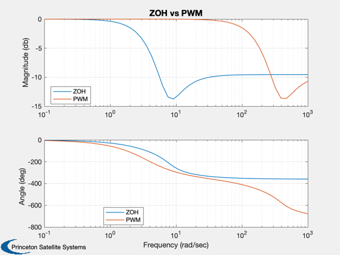

Shows the difference between a PWM and a ZOH.
This is typically used for design in the continuous domain. These functions produce state-space systems for a pulsewidth modulator or a zero order hold. ------------------------------------------------------------------------ See also FResp, PWM, ZOH, Plot2D ------------------------------------------------------------------------
Contents
%-------------------------------------------------------------------------- % Copyright (c) 2000 Princeton Satellite Systems, Inc. % All rights reserved. %--------------------------------------------------------------------------
Compute the state space systems
tSamp = 1;
tPW = 0.02; % Generally use the minimum pulsewidth
[aZ, bZ, cZ, dZ] = ZOH( tSamp );
[aP ,bP, cP, dP] = PWM( tPW, tSamp );
Get the frequency responses
w = logspace(-1,3); [mZ, pZ] = FResp( aZ, bZ, cZ, dZ, 1,1, w ); [mP, pP] = FResp( aP, bP, cP, dP, 1,1, w );
Plot
mZ = 20*log10(mZ);
mP = 20*log10(mP);
yL = {'Magnitude (db)';'Angle (deg)'};
% We add legends to each plot
Plot2D( w, [mZ;mP;pZ;pP], 'Frequency (rad/sec)', yL,...
'ZOH vs PWM', ['xlog';'xlog'], ['1:2';'3:4'],[],[],[],[],...
{{'ZOH' 'PWM'},{'ZOH' 'PWM'}});
%--------------------------------------
% $Date$
% $Id: 382c78f80fd9caf7ba9c28ae40275ee4784243ea $
